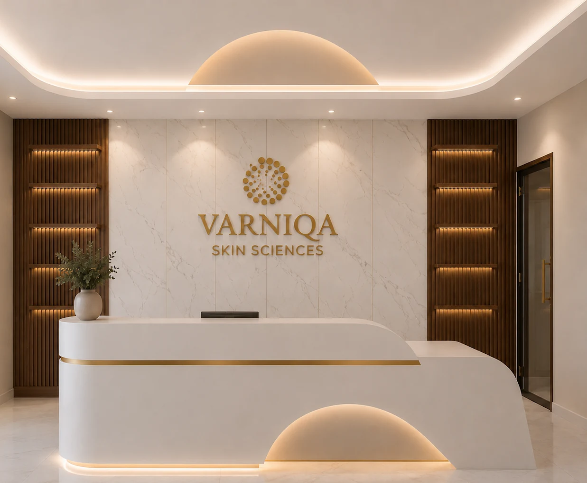
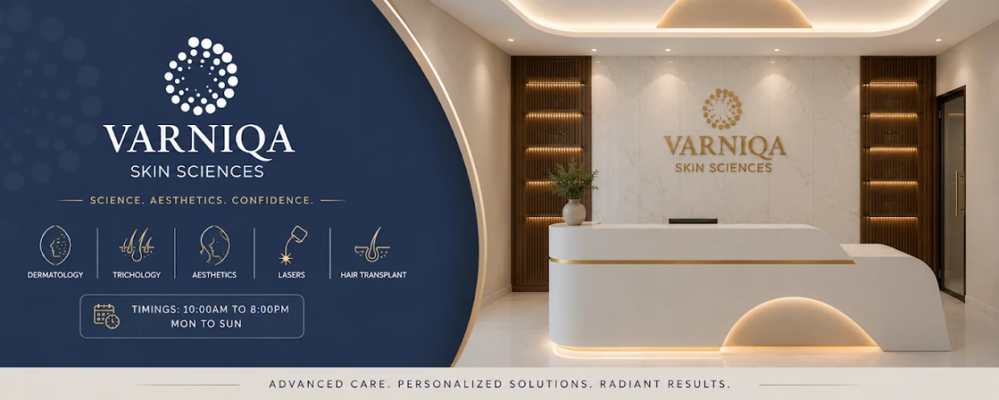
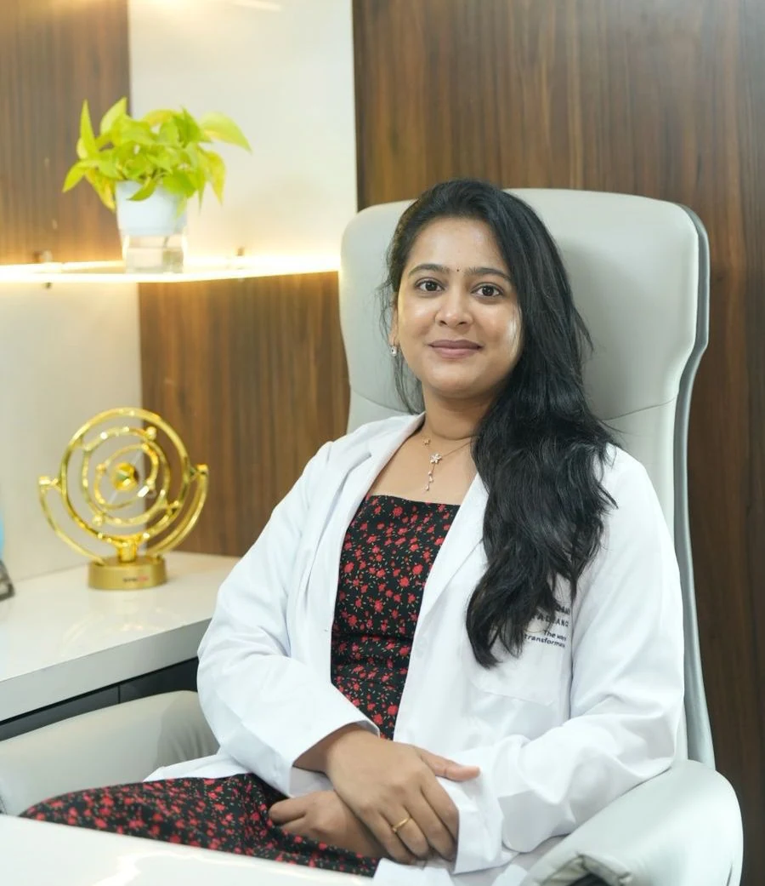

Confidence Through Care
Dermatology, Aesthetics & Hair Transplant in Nallagandla, Hyderabad
Varniqa Skin Sciences is a dermatology, aesthetic medicine and hair restoration clinic led by Dr. Manvitha Poluri, MBBS, MD (DVL) — treating skin, hair and nail concerns for patients across Nallagandla, Gopanpalle, Tellapur, Gachibowli and Kondapur.
- Nallagandla, Hyderabad
- Open 7 days, 10:00 am – 8:00 pm
- MBBS, MD (DVL) dermatologist


About Varniqa Skin Sciences
Varniqa Skin Sciences is a dermatology, aesthetic medicine and hair restoration clinic on Kanchi Gachibowli Road in Nallagandla, Hyderabad. The clinic is led by Dr. Manvitha Poluri, a consultant dermatologist holding MBBS and MD (DVL) qualifications, and treats medical, cosmetic and surgical conditions of the skin, hair and nails.
We at Varniqa believe that trust is the foundation of exceptional healthcare. We use modern diagnostic techniques — including trichoscopy and dermoscopy — and evidence-based treatment protocols to deliver effective solutions across all three disciplines.
Our commitment is to provide honest guidance, transparent treatment plans and compassionate care in a comfortable environment. Every plan begins with a clinical assessment, so patients understand what a treatment involves, how many sessions it is likely to take and what results are realistic before anything begins.
Meet Your Dermatologist
Dr. Manvitha Poluri
MBBS, MD (DVL)
Founder & Chief Consultant Dermatologist
Trichologist & Hair Transplant Surgeon
A dermatology consultant with over 5 years of clinical experience across paediatric, cosmetic, aesthetic and surgical dermatology. She provides personalised, evidence-based care with a strong focus on clinical outcomes and patient satisfaction.
Her practice covers trichoscopy, laser therapies, cosmetic procedures and minor dermatologic surgery.

Our Services
Varniqa offers six areas of care across medical dermatology, hair restoration and aesthetic medicine. Every service begins with a consultation, because the right treatment depends on an accurate diagnosis.
-
Dermatology
Diagnosis and treatment of medical skin, hair and nail conditions — including acne and acne scarring, eczema and dermatitis, psoriasis, fungal infections, melasma and pigmentation, vitiligo, urticaria and nail disorders. Assessment may involve dermoscopy to examine lesions at magnification. Treatment is typically a combination of topical therapy, oral medication and in-clinic procedures, planned around the diagnosis and how your skin responds over time.
-
Trichology
Evaluation and treatment of hair loss and scalp disease. Consultations use trichoscopy — magnified examination of the scalp and hair shafts — to distinguish between pattern hair loss, telogen effluvium, alopecia areata and scarring alopecias, since each responds to a different treatment. Management may include topical and oral therapy, nutritional correction, and in-clinic procedures such as PRP or microneedling depending on the diagnosis.
-
Aesthetic Medicine
Non-surgical facial treatments including botulinum toxin for dynamic lines, dermal fillers for volume loss and contour, chemical peels for texture and pigmentation, and medical-grade skin rejuvenation. These are prescription procedures performed by a qualified dermatologist after assessment. Results, longevity and the number of sessions vary by treatment and by individual, and are discussed openly before you commit to anything.
-
Laser Treatments
Dermatological laser procedures for concerns including unwanted hair, pigmentation, acne scarring, skin texture and certain vascular lesions. Laser selection depends on your skin type and the condition being treated — Indian and South Asian skin needs careful parameter settings to reduce the risk of post-inflammatory pigmentation. Most laser treatments require a course of sessions spaced several weeks apart, confirmed at consultation.
-
Dermatosurgery
Minor surgical procedures of the skin performed under local anaesthesia — removal of moles, skin tags, warts, cysts, corns and other benign lesions, along with procedures such as earlobe repair and vitiligo surgery. Suspicious lesions may be biopsied for histopathology rather than removed cosmetically. Procedures are usually completed as day cases, with aftercare instructions provided before you leave.
-
Hair Transplant
Surgical hair restoration for pattern hair loss, using follicular unit techniques to move permanent hair follicles from the donor area at the back and sides of the scalp to areas of thinning. Suitability depends on donor density, the stage and stability of hair loss, and general health — not everyone with hair loss is a candidate. Graft numbers and expected outcomes are set out honestly at consultation.
Why Choose Varniqa?
Combining medical expertise with compassionate care for healthier skin and lasting confidence.
-
Expert Dermatologist
Evidence-based treatments delivered by a qualified MD (DVL) dermatologist, not a technician.
-
Advanced Diagnostics
Dermoscopy and trichoscopy are used to diagnose accurately before any treatment is recommended.
-
Personalised Care
Every treatment plan is tailored to your individual skin and hair needs, not sold from a package menu.
-
Patient First
A commitment to safety, comfort and long-term skin health, with realistic expectations set upfront.
Frequently Asked Questions
Answers to the questions patients ask most often. If yours isn't here, message us on WhatsApp.
Where is Varniqa Skin Sciences located?
Varniqa Skin Sciences is on the second floor of Hytek Arcade, Block A, Kanchi Gachibowli Road, Gopanpalle, Nallagandla, Hyderabad, Telangana 500046. The clinic is convenient for patients in Nallagandla, Tellapur, Gopanpalle, Gachibowli, Kondapur and Lingampally.
What are the clinic's opening hours?
The clinic is open seven days a week, from 10:00 am to 8:00 pm, including Saturdays and Sundays. Appointments are recommended to avoid waiting, particularly for procedures. Call or message on WhatsApp to confirm availability before travelling.
How do I book an appointment at Varniqa?
You can book by calling +91 90001 53463 or by sending a WhatsApp message to the same number. Tell us your main concern and preferred day, and we will confirm a slot. Walk-ins are accepted during opening hours subject to availability.
Who is the dermatologist at Varniqa Skin Sciences?
The clinic is led by Dr. Manvitha Poluri, MBBS, MD (DVL), Founder and Chief Consultant Dermatologist. She is a trichologist and hair transplant surgeon with over 5 years of clinical experience across paediatric, cosmetic, aesthetic and surgical dermatology.
What skin conditions does the clinic treat?
Varniqa treats acne and acne scarring, melasma and pigmentation, eczema and dermatitis, psoriasis, fungal and bacterial skin infections, vitiligo, urticaria, warts, moles and nail disorders, alongside cosmetic concerns such as skin texture, dullness and signs of ageing.
What is trichology?
Trichology is the branch of dermatology dealing with the hair and scalp. A trichology consultation identifies the cause of hair loss or scalp disease — using magnified trichoscopy examination and, where needed, blood tests — so treatment targets the actual diagnosis rather than the symptom.
What is the difference between FUE and FUT hair transplant?
FUE (follicular unit extraction) removes individual follicular units directly from the donor area, leaving small dot scars. FUT (follicular unit transplantation) removes a strip of scalp from which units are dissected, leaving a linear scar. Which suits you depends on graft requirement, donor density and hairstyle preference.
Is a hair transplant painful?
A hair transplant is performed under local anaesthesia, so the procedure itself is not painful, though you will feel pressure and movement. Mild soreness, tightness and swelling for a few days afterwards are normal and are managed with prescribed medication and aftercare instructions.
Am I a suitable candidate for a hair transplant?
Suitability depends on the pattern and stability of your hair loss, the density of your donor area, your age and your general health. Not everyone experiencing hair loss is a candidate, and in some cases medical treatment is the better option. This is assessed at consultation before any surgery is planned.
What is dermatosurgery?
Dermatosurgery covers minor surgical procedures performed on the skin under local anaesthesia — removal of moles, skin tags, warts, cysts and corns, biopsies of suspicious lesions, earlobe repair and vitiligo surgery. Most procedures are completed in a single visit as a day case.
How many laser sessions will I need?
Most dermatological laser treatments require a course rather than a single session, typically spaced several weeks apart to work with the skin's healing and hair growth cycles. The exact number depends on your skin type, the condition treated and how you respond, and is confirmed at consultation.
How much do treatments at Varniqa cost?
Cost depends on the diagnosis, the treatment chosen and the number of sessions required, so it is confirmed after a clinical assessment rather than quoted in advance. You will be given a clear, itemised plan before any treatment begins. Call or WhatsApp +91 90001 53463 for consultation details.
Which areas does the clinic serve?
Varniqa Skin Sciences primarily serves west Hyderabad — Nallagandla, Gopanpalle, Tellapur, Gachibowli, Kondapur, Lingampally, Serilingampally and the surrounding Financial District and HITEC City neighbourhoods — and welcomes patients travelling from across Hyderabad and Telangana.
Contact Us
Phone
Address
Second Floor, Hytek Arcade, Block A,Kanchi Gachibowli Rd, Gopanpalle,
Nallagandla, Hyderabad,
Telangana 500046
Opening Hours
| Monday – Friday | 10:00 am – 8:00 pm |
|---|---|
| Saturday | 10:00 am – 8:00 pm |
| Sunday | 10:00 am – 8:00 pm |
Areas Served
Nallagandla, Gopanpalle, Tellapur, Gachibowli, Kondapur, Lingampally and Serilingampally, Hyderabad.